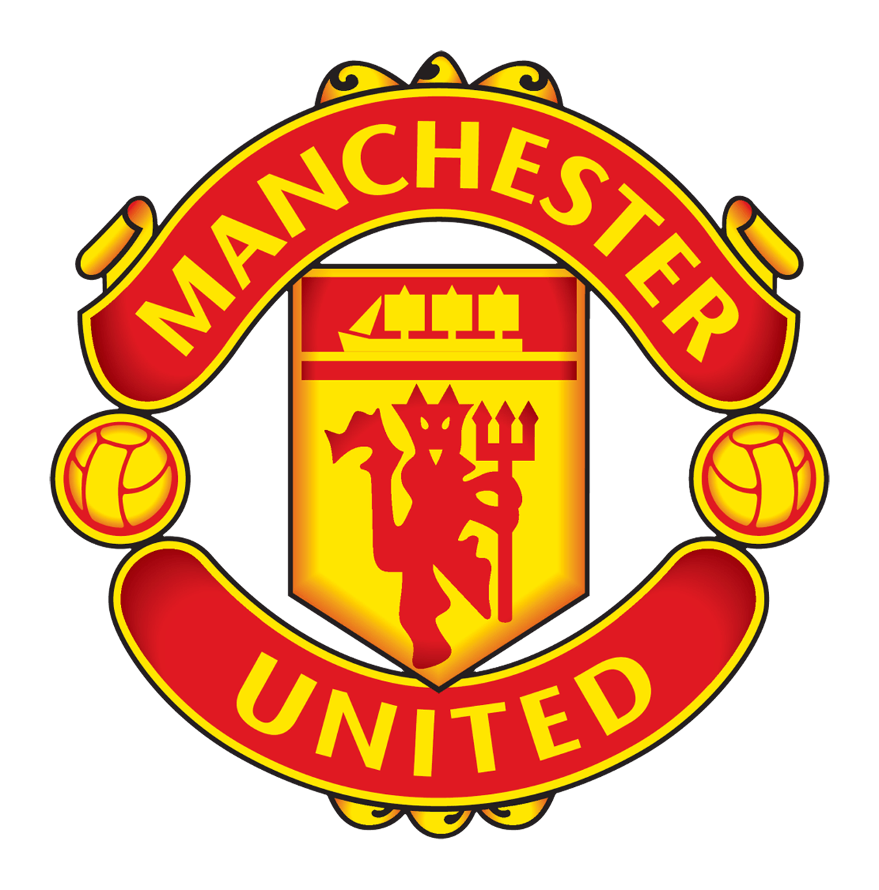

Manchester United Football Team
JUMLAH TROFI SEPANJANG MASA
| Piala | Jumlah Trofi | Tahun terakhir | Pelatih |
|---|---|---|---|
| Premier League | 20 | 2012/2013 | Sir Alex Ferguson | FA Cup | 13 | 2023/2024 | Erik Ten Hag |
| Uefa Championship League | 3 | 2007/2008 | Sir Alex Ferguson |
| Community Shield | 21 | 2015/2016 | Jose Mourinho |
| Europa League | 1 | 2016/2017 | Jose Mourinho |
| UEFA Super Cup | 1 | 1991 | Sir Alex Ferguson |
| FIFA World Cup | 1 | 2008 | Sir Alex Ferguson |
| Intercontinental Cup | 1 | 1999 | Sir Alex Ferguson |
| UEFA Cup Winners' Cup | 1 | 1991 | Sir Alex Ferguson |
| Football League Division Two | 2 | 1974/1975 | Tommy Docherty |
| Carabao Cup | 10 | 2022/2023 | Erik Ten Hag |
| Total Trofi | 74 |